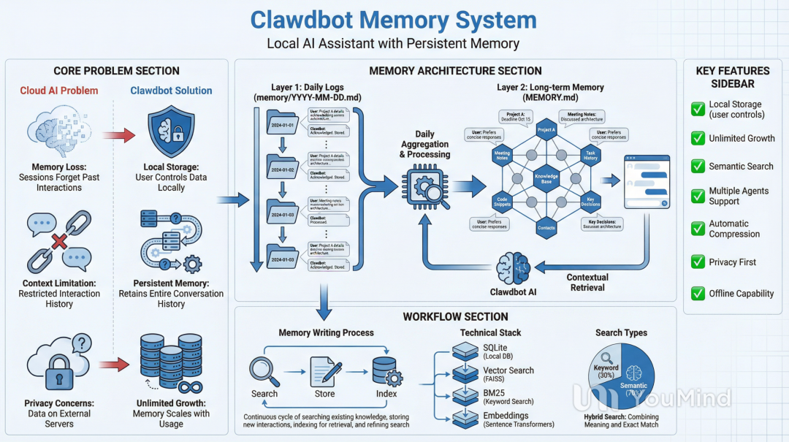

你是否曾经和AI助手聊了一整晚，第二天打开对话却发现它完全忘了你们讨论过的关键细节？或者当你在多个项目之间切换时，AI总是在问"你指的是哪个API"，让你不厌其烦地重复背景信息。这种"金鱼式记忆"是当下大多数云端AI产品的通病——它们要么只能记住有限的上下文，要么把所有数据都存储在厂商的服务器上。
但如果有一个AI助手，它能像一位真正的私人助理那样，永远记住你的偏好、你的项目细节、甚至你三个月前提过的小习惯？更妙的是，这些记忆完全存储在你自己的电脑上，由你全权掌控。
这就是Clawdbot正在做的事情。作为一款开源的个人AI助手，Clawdbot在GitHub上已经获得了超过125,000个Star。与运行在云端的ChatGPT或Claude不同，Clawdbot直接运行在你的本地机器上，并且能够集成到你日常使用的聊天平台中（Discord、WhatsApp、Telegram等）。
它不仅是一个聊天机器人，更是一个能自主处理实际任务的助手：管理邮件、安排日历、处理航班值机、按计划运行后台任务。但最吸引我的是它的持久化记忆系统——它能实现24/7的全天候上下文保持，记住对话内容，并无限期地基于之前的交互进行累积。
如果你读过我之前关于ChatGPT记忆和Claude记忆的文章，就知道我对不同AI产品如何处理记忆这个问题非常着迷。Clawdbot采用了一种截然不同的方法：它不是基于云端、由公司控制的记忆，而是将一切保存在本地，让用户完全拥有自己的上下文和技能数据。

让我们一起深入了解它是如何工作的。
以下内容翻译自《How Clawdbot Remembers Everything》
https://x.com/manthanguptaa/status/2015780646770323543
上下文是如何构建的
在深入探讨记忆之前，我们先来理解模型在每次请求时能看到什么：
[0] 系统提示词（静态指令 + 条件指令）
[1] 项目上下文（引导文件：AGENTS.md、SOUL.md 等）
[2] 对话历史（消息、工具调用、压缩摘要）
[3] 当前消息系统提示词定义了Agent的能力和可用工具。与记忆相关的是"项目上下文"，它包含了用户可编辑的Markdown文件，这些文件会被注入到每次请求中：
这些文件位于Agent的工作空间中，与记忆文件并存，使得整个Agent的配置变得透明且可编辑。
上下文 vs 记忆
理解上下文和记忆之间的区别，是理解Clawdbot的基础。
上下文是模型在单次请求中能看到的一切：
上下文 = 系统提示词 + 对话历史 + 工具结果 + 附件上下文的特性：
• 临时的——只存在于本次请求期间 • 有限的——受限于模型的上下文窗口（例如20万token） • 昂贵的——每个token都计入API成本和速度
记忆是存储在磁盘上的内容：
记忆 = MEMORY.md + memory/*.md + 会话转录文件记忆的特性：
• 持久的——在重启、日复一日、月复一月后依然存在 • 无限的——可以无限增长 • 低成本的——存储不产生API费用 • 可搜索的——建立索引以支持语义检索
记忆工具
Agent通过两个专用工具来访问记忆：
1. memory_search
用途：在所有文件中查找相关的记忆
{
"name":"memory_search",
"description":"强制性回忆步骤：在回答关于之前工作、决策、日期、人员、偏好或待办事项的问题之前，对MEMORY.md和memory/*.md进行语义搜索",
"parameters":{
"query":"我们对API做了什么决定？",
"maxResults":6,
"minScore":0.35
}
}返回结果：
{
"results":[
{
"path":"memory/2026-01-20.md",
"startLine":45,
"endLine":52,
"score":0.87,
"snippet":"## API 讨论\n决定为了简单起见使用REST而不是GraphQL...",
"source":"memory"
}
],
"provider":"openai",
"model":"text-embedding-3-small"
}2. memory_get
用途：在找到内容后读取具体内容
{
"name":"memory_get",
"description":"在使用memory_search后，从记忆文件中读取特定行",
"parameters":{
"path":"memory/2026-01-20.md",
"from":45,
"lines":15
}
}返回结果：
{
"path": "memory/2026-01-20.md",
"text": "## API 讨论\n\n与团队讨论API架构。\n\n### 决策\n我们选择REST而非GraphQL，原因如下：\n1. 实现更简单\n2. 更好的缓存支持\n3. 团队更熟悉\n\n### 端点\n- GET /users\n- POST /auth/login\n- GET /projects/:id"
}写入记忆
并没有专门的memory_write工具。Agent使用标准的写入和编辑工具来写入记忆——这些工具它本来就在用于处理任何文件。由于记忆就是普通的Markdown，你也可以手动编辑这些文件（它们会被自动重新索引）。
写入位置的决策是通过AGENTS.md中的提示来驱动的：
在预压缩刷新和会话结束时，也会自动进行写入（后续章节会介绍）。
记忆存储
Clawdbot的记忆系统建立在"记忆就是Agent工作空间中的纯Markdown"这一原则之上。
双层记忆系统
记忆位于Agent的工作空间中（默认：~/clawd/）：
~/clawd/
├── MEMORY.md - 第二层：长期策划的知识
└── memory/
├── 2026-01-26.md - 第一层：今天的笔记
├── 2026-01-25.md - 昨天的笔记
├── 2026-01-24.md - ...以此类推
└── ...第一层：每日日志（memory/YYYY-MM-DD.md）
这些是仅追加的每日笔记，Agent会在一天中随时写入。当Agent想要记住某事，或被明确告知要记住某事时，就会写入这里。
# 2026-01-26
## 10:30 AM - API 讨论
与用户讨论REST vs GraphQL。决策：为了简单使用REST。
关键端点：/users、/auth、/projects。
## 2:15 PM - 部署
将v2.3.0部署到生产环境。没有问题。
## 4:00 PM - 用户偏好
用户提到他们喜欢TypeScript胜过JavaScript。第二层：长期记忆（MEMORY.md）
这是经过策划的、持久的知识。当发生重大事件、想法、决策、观点和学到的教训时，Agent会写入这里。
# 长期记忆
## 用户偏好
- 喜欢TypeScript胜过JavaScript
- 喜欢简洁的解释
- 正在做"Acme Dashboard"项目
## 重要决策
- 2026-01-15：选择PostgreSQL作为数据库
- 2026-01-20：采用REST而非GraphQL
- 2026-01-26：使用Tailwind CSS进行样式设计
## 关键联系人
- Alice (alice@acme.com) - 设计负责人
- Bob (bob@acme.com) - 后端工程师Agent如何知道要读取记忆
AGENTS.md文件（会自动加载）包含以下指令：
## 每次会话
在做其他事情之前：
1. 阅读 SOUL.md - 这是你是谁
2. 阅读 USER.md - 这是你在帮助谁
3. 阅读 memory/YYYY-MM-DD.md（今天和昨天）获取近期上下文
4. 如果是在主会话中（与你的主人直接聊天），还要阅读 MEMORY.md
不要请求许可，直接做。记忆如何被索引
当你保存一个记忆文件时，后台会发生以下事情：
┌─────────────────────────────────────────────────────────────┐
│ 1. 文件保存 │
│ ~/clawd/memory/2026-01-26.md │
└─────────────────────────────────────────────────────────────┘
│
▼
┌─────────────────────────────────────────────────────────────┐
│ 2. 文件监视器检测到变化 │
│ Chokidar 监视 MEMORY.md + memory/**/*.md │
│ 防抖1.5秒以批量处理快速写入 │
└─────────────────────────────────────────────────────────────┘
│
▼
┌─────────────────────────────────────────────────────────────┐
│ 3. 分块 │
│ 分割成约400 token的块，重叠80 token │
│ │
│ ┌────────────────┐ │
│ │ 块 1 │ │
│ │ 第 1-15 行 │──────┐ │
│ └────────────────┘ │ │
│ ┌────────────────┐ │ (80 token 重叠) │
│ │ 块 2 │◄─────┘ │
│ │ 第 12-28 行 │──────┐ │
│ └────────────────┘ │ │
│ ┌────────────────┐ │ │
│ │ 块 3 │◄─────┘ │
│ │ 第 25-40 行 │ │
│ └────────────────┘ │
│ │
│ 为什么用400/80？平衡语义连贯性与粒度。 │
│ 重叠确保跨越块边界的事实能被两边捕获。 │
│ 两个值都是可配置的。 │
└─────────────────────────────────────────────────────────────┘
│
▼
┌─────────────────────────────────────────────────────────────┐
│ 4. 嵌入 │
│ 每个块 -> 嵌入提供商 -> 向量 │
│ │
│ "讨论REST vs GraphQL" -> │
│ OpenAI/Gemini/Local -> │
│ [0.12, -0.34, 0.56, ...] (1536 维) │
└─────────────────────────────────────────────────────────────┘
│
▼
┌─────────────────────────────────────────────────────────────┐
│ 5. 存储 │
│ ~/.clawdbot/memory/<agentId>.sqlite │
│ │
│ 表： │
│ - chunks (id, path, start_line, end_line, text, hash) │
│ - chunks_vec (id, embedding) -> sqlite-vec │
│ - chunks_fts (text) -> FTS5 全文搜索 │
│ - embedding_cache (hash, vector) -> 避免重复嵌入 │
└─────────────────────────────────────────────────────────────┘sqlite-vec 是一个SQLite扩展，它直接在SQLite中实现向量相似度搜索，无需外部向量数据库。
FTS5 是SQLite内置的全文搜索引擎，为BM25关键词匹配提供支持。两者结合，使Clawdbot能够从一个轻量级数据库文件中运行混合搜索（语义 + 关键词）。
记忆如何被搜索
当你搜索记忆时，Clawdbot会并行运行两种搜索策略。向量搜索（语义）找到意思相同的内容，BM25搜索（关键词）找到包含确切token的内容。
结果通过加权评分合并：
最终得分 = (0.7 * 向量得分) + (0.3 * 文本得分)为什么是70/30？语义相似性是记忆回忆的主要信号，但BM25关键词匹配能捕捉向量可能遗漏的确切术语（名称、ID、日期）。低于minScore阈值（默认0.35）的结果会被过滤掉。所有这些值都是可配置的。
这确保无论你是在搜索概念（"那个数据库的事情"）还是具体内容（"POSTGRES_URL"），都能获得良好的结果。
多Agent记忆
Clawdbot支持多个Agent，每个Agent都有完全独立的记忆：
~/.clawdbot/memory/ # 状态目录（索引）
├── main.sqlite # "main" Agent的向量索引
└── work.sqlite # "work" Agent的向量索引
~/clawd/ # "main" Agent工作空间（源文件）
├── MEMORY.md
└── memory/
└── 2026-01-26.md
~/clawd-work/ # "work" Agent工作空间（源文件）
├── MEMORY.md
└── memory/
└── 2026-01-26.mdMarkdown文件（事实来源）位于每个工作空间中，而SQLite索引（派生数据）位于状态目录中。每个Agent都有自己的工作空间和索引。记忆管理器通过agentId + workspaceDir来区分，因此不会自动发生跨Agent记忆搜索。
Agent能读取彼此的记忆吗？ 默认不能。每个Agent只能看到自己的工作空间。但是，工作空间是一个软沙盒（默认工作目录），而不是硬边界。除非启用严格的沙盒机制，否则Agent理论上可以使用绝对路径访问另一个工作空间。
这种隔离对于分离上下文很有用。一个用于WhatsApp的"个人"Agent和一个用于Slack的"工作"Agent，各自拥有独立的记忆和个性。
压缩
每个AI模型都有上下文窗口限制。Claude有20万token，GPT-5.1有100万。长对话最终会触及这个上限。
当这种情况发生时，Clawdbot使用压缩：将旧对话总结为紧凑的条目，同时保留最近消息的完整性。
┌─────────────────────────────────────────────────────────────┐
│ 压缩前 │
│ 上下文：180,000 / 200,000 token │
│ │
│ [第1轮] 用户："我们建个API吧" │
│ [第2轮] Agent："好的！你需要什么端点？" │
│ [第3轮] 用户："用户和认证相关的" │
│ [第4轮] Agent：*创建了500行模式定义* │
│ [第5轮] 用户："加上限流功能" │
│ [第6轮] Agent：*修改代码* │
│ ...（还有100多轮）... │
│ [第150轮] 用户："状态怎么样了？" │
│ │
│ ⚠️ 接近限制 │
└─────────────────────────────────────────────────────────────┘
│
▼
┌─────────────────────────────────────────────────────────────┐
│ 触发压缩 │
│ │
│ 1. 将第1-140轮总结为紧凑摘要 │
│ 2. 保留第141-150轮不变（近期上下文） │
│ 3. 将摘要持久化到JSONL转录文件 │
└─────────────────────────────────────────────────────────────┘
│
▼
┌─────────────────────────────────────────────────────────────┐
│ 压缩后 │
│ 上下文：45,000 / 200,000 token │
│ │
│ [摘要] "构建了带/users、/auth端点的REST API。 │
│ 实现了JWT认证、限流（100次/分钟）、PostgreSQL数据库。 │
│ 已部署到预发布环境v2.4.0。 │
│ 当前重点：生产环境部署准备。" │
│ │
│ [第141-150轮原样保留] │
│ │
└─────────────────────────────────────────────────────────────┘自动 vs 手动压缩
自动：当接近上下文限制时触发
• 在详细模式下你会看到：🧹 自动压缩完成 • 原始请求会用压缩后的上下文重试
手动：使用 /compact 命令
/compact 重点关注决策和未解决的问题与某些优化不同，压缩会持久化到磁盘。摘要被写入会话的JSONL转录文件，因此未来的会话以压缩后的历史开始。
记忆刷新
基于LLM的压缩是一个有损过程。重要信息可能被总结掉并可能丢失。为了应对这一点，Clawdbot使用了预压缩记忆刷新。
┌─────────────────────────────────────────────────────────────┐
│ 上下文接近限制 │
│ │
│ ████████████████████████████░░░░░░░░ 上下文的75% │
│ ↑ │
│ 超过软阈值 │
│ (contextWindow - reserve - softThreshold)│
└─────────────────────────────────────────────────────────────┘
│
▼
┌─────────────────────────────────────────────────────────────┐
│ 静默记忆刷新轮次 │
│ │
│ 系统："预压缩记忆刷新。现在存储持久的 │
│ 记忆（使用 memory/YYYY-MM-DD.md）。 │
│ 如果没有要存储的，回复 NO_REPLY。" │
│ │
│ Agent：审查对话中的重要信息 │
│ 将关键决策/事实写入记忆文件 │
│ -> NO_REPLY（用户看不到任何内容） │
└─────────────────────────────────────────────────────────────┘
│
▼
┌─────────────────────────────────────────────────────────────┐
│ 安全进行压缩 │
│ │
│ 重要信息现在已在磁盘上 │
│ 压缩可以在不丢失知识的情况下进行 │
└─────────────────────────────────────────────────────────────┘记忆刷新可以在clawdbot.yaml文件或clawdbot.json文件中配置。
{
"agents":{
"defaults":{
"compaction":{
"reserveTokensFloor":20000,
"memoryFlush":{
"enabled":true,
"softThresholdTokens":4000,
"systemPrompt":"会话接近压缩。现在存储持久的记忆。",
"prompt":"将持久的笔记写入 memory/YYYY-MM-DD.md；如果没有要存储的，回复 NO_REPLY。"
}
}
}
}
}剪枝
工具结果可能非常庞大。单个exec命令可能输出5万个字符的日志。剪枝会修剪这些旧输出，而不重写历史。这是一个有损过程，旧输出无法恢复。
┌─────────────────────────────────────────────────────────────┐
│ 剪枝前（内存中） │
│ │
│ 工具结果（exec）：[5万个字符的npm install输出] │
│ 工具结果（read）：[大型配置文件，1万个字符] │
│ 工具结果（exec）：[构建日志，3万个字符] │
│ 用户："构建成功了吗？" │
└─────────────────────────────────────────────────────────────┘
│
▼ （软修剪 + 硬清除）
┌─────────────────────────────────────────────────────────────┐
│ 剪枝后（发送给模型） │
│ │
│ 工具结果（exec）："npm WARN deprecated...[已截断] │
│ ...成功安装。" │
│ 工具结果（read）："[旧工具结果内容已清除]" │
│ 工具结果（exec）：[保留 - 太新，不适合剪枝] │
│ 用户："构建成功了吗？" │
└─────────────────────────────────────────────────────────────┘磁盘上的JSONL文件：保持不变（完整输出仍然在那里）
缓存TTL剪枝
Anthropic会对提示词前缀进行最多5分钟的缓存，以减少重复调用的延迟和成本。当相同的提示词前缀在TTL窗口内发送时，缓存的token成本降低约90%。TTL过期后，下一个请求必须重新缓存整个提示词。
问题：如果会话在TTL之后闲置，下一个请求会失去缓存，必须以完整的"缓存写入"价格重新缓存完整的对话历史。
缓存TTL剪枝通过在缓存过期后检测并修剪旧工具结果来解决这个问题。更小的提示词重新缓存意味着更低的成本：
{
"agent":{
"contextPruning":{
"mode":"cache-ttl",
"ttl":"600",
"keepLastAssistants":3,
"softTrim":{
"maxChars":4000,
"headChars":1500,
"tailChars":1500
},
"hardClear":{
"enabled":true,
"placeholder":"[旧工具结果内容已清除]"
}
}
}
}会话生命周期
会话不会永远持续。它们根据可配置的规则进行重置，为记忆创建自然的边界。默认行为是每天重置。但也有其他模式可用。
会话记忆钩子
当你运行 /new 开始一个新会话时，会话记忆钩子可以自动保存上下文：
/new
│
▼
┌─────────────────────────────────────────────────────────────┐
│ 触发会话记忆钩子 │
│ │
│ 1. 从结束会话中提取最后15条消息 │
│ 2. 通过LLM生成描述性slug │
│ 3. 保存到 ~/clawd/memory/2026-01-26-api-design.md │
└─────────────────────────────────────────────────────────────┘
│
▼
┌─────────────────────────────────────────────────────────────┐
│ 新会话开始 │
│ │
│ 之前的上下文现在可以通过 memory_search 搜索 │
└─────────────────────────────────────────────────────────────┘总结
Clawdbot的记忆系统之所以成功，是因为它遵循了几个关键原则：
1. 透明优于黑盒
记忆是纯Markdown。你可以阅读、编辑、版本控制它。没有不透明数据库或专有格式。
2. 搜索优于注入
与其用所有内容塞满上下文，不如让Agent搜索相关内容。这保持上下文聚焦并降低成本。
3. 持久优于会话
重要信息作为文件保存在磁盘上，而不仅仅存在于对话历史中。压缩无法摧毁已经保存的内容。
4. 混合优于单一
纯向量搜索会漏掉精确匹配。纯关键词搜索会漏掉语义。混合搜索两者兼得。
参考资料
• Clawdbot文档(https://docs.clawd.bot/) - 官方文档，涵盖设置、配置和所有功能 • GitHub仓库(https://github.com/clawdbot/clawdbot) - 源代码、问题和社区贡献
我们创建了一个高质量的技术交流群，与优秀的人在一起，自己也会优秀起来，赶紧 点击加群 ，享受一起成长的快乐。